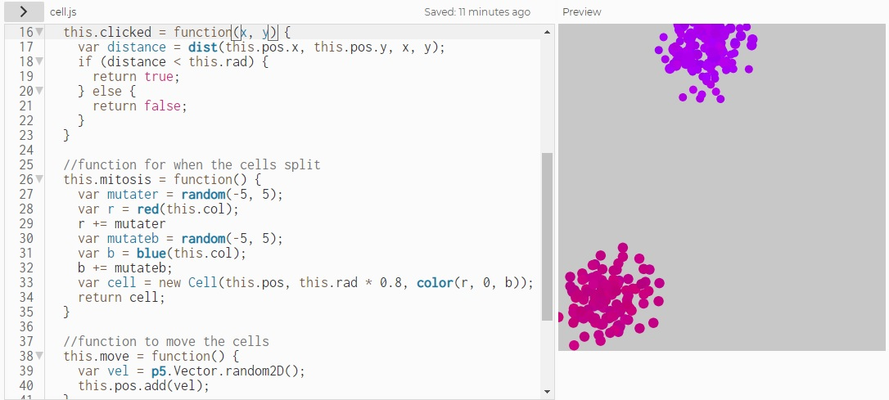
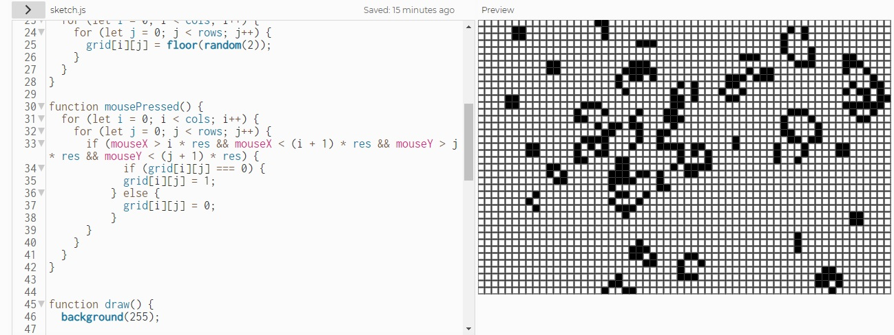

Black Hole

The creative coding session was also incredibly meaningful in that it allowed for me to put everything I had just learnt from the Khan Academy modules into a single, large project showcasing a natural simulation (albeit a not very realistic one). Going through the videos provided by Dan Shiffman, I was able to get a sense of the mindset and strategy associated with starting a coding project from scratch; what is file should I start working on, what is the best order of doing things so I can regularly check that I am progressing, etc. For my refactoring og the original code, I included a star, or blackbody emitter, which, while falling towards the black hole, emits its own photons. Unfortunately, for aesthetic and performance reasons, I had to limit the frequency of emissions and only made the star emit in four directions, but the simulation was still capable of showing how light bends when emitted by a star and near a black hole. I also fixed a mistake in the original code that forgot to take into account the timestep when adding acceleration to velocity, and introduced an 'error' parameter to make sure that light within 2.6 Schwarzschild radii of the hole gets sucked in and light outside 2.6 Schwarzschild radii escapes. The second version of the refactoring, which is shown above, introduces the possibility of multiple stars created by a four loop and with random initial conditions. Overall, doing this project gave me insights once again into how one may go about starting simulations from scratch, gradually increasing complexity. This is something I will be sure to take with me as I continue to learn physical concepts and use simulations to model them. You can find a link to the GitHub repository with all of my refactorings here.
Other Refactorings:
Mitosis
This refactoring, as you can see above, introduces the possibility of slight mutations in the colouration of cells as they evolve. This is achieved through slight, random changes in the red and blue components of the new cell's colour compared to its parent cell. You can also a link to the GitHub repository with the refactoring here.
Game of Life
This refactoring introduces two changes to the Game of Life code. First, the colours of the tiles are switched. Whereas before dead tiles were black and live tiles were white, now the inverse is true. This is how the original Game of Life was set up. A second and more consequential change introduces a player to the game. That is, a player can now click to change the state of the board. A click on a dead tile will turn it into a live tile, and a click on a live tile will turn it into a dead tile. With this adition, players could perhaps set themselves the goal of wiping out the entire board. You can find a link to the GitHub repository with the refactoring here.